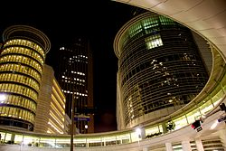
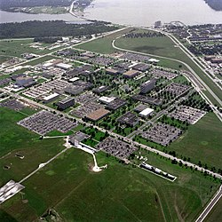

Хью́стон (англ. Houston) — четвёртый по количеству жителей город в Соединённых Штатах Америки
и крупнейший город в штате Техас с населением 2 304 580 человек по данным переписи населения 2020 года. Хьюстон является
Хьюстон является административным центром округа Харрис, а также главным экономическим центром агломерации
Большого Хьюстона, занимающего пятое место среди агломераций по населению с общей численностью 7 122 240 человек по результатам переписи 2020 года. Город располагается в 50
километрах от Мексиканского залива на прибрежной равнине.
Хьюстон был основан 30 августа 1836 года и включён в состав республики Техас 5 июня 1837 года,
получив своё имя в честь Сэмюэла Хьюстона — главнокомандующего армией Техаса во время<
Техасской революции и президента Республики Техас. Быстрое развитие порта и железных дорог в
XIX веке, а также начало добычи нефти и последовавшее развитие нефтяной промышленности в XX
веке привели к быстрому росту населения. В 1960-е годы количество жителей превысило один
миллион человек, а в 2000-е — два миллиона.
Город является ведущим мировым центром энергетической промышленности, а экономика города
акже представлена предприятиями в области аэронавтики, транспорта и здравоохранения.
Важнейшими объектами для экономики и инфраструктуры города являются космический центр
имени Линдона Джонсона, крупнейший американский по международным грузоперевозкам порт,
хьюстонский судоходный канал, крупнейший в мире Техасский медицинский центр.
Сэмюэл Хьюстон
Город назван в честь Сэмюэла Хьюстона — главнокомандующего армией Техаса во время Техасской
Техасской революции (1835—1836) и президента Республики Техас (1836—1838, 1841—1844)
Официальное прозвище Хьюстона — «Space city», которое можно перевести, как «космический
город», «город космонавтики» или «космоград». Название дано из-за того, что здесь находится
космический центр имени Линдона Джонсона. Всего город имеет 12 прозвищ.
В американской разговорной речи есть популярная фраза: «Хьюстон, у нас проблема» (англ.
Houston, we’ve had a problem), появившаяся после неудачной миссии Аполлон-13. В Хьюстоне
проходили съёмки фильма «Аполлон-13», в основу сюжета которого легли реальные события миссии.
Основание
Allen’s Landing — место, где был основан город
После окончания войны за независимость Техаса, в августе 1836 года предприниматели братья Август
и Джон Аллены купили 26,9 км2 земли вдоль реки Буффало-Байю, планируя основать на ней
населённый пункт. Они хотели, чтобы будущий город стал столицей Техаса и крупным торговым
центром.
Датой основания города принято считать 30 августа 1836 года, когда братья Аллены разместили
объявление о появлении города. Город назвали в честь генерала Сэма Хьюстона, возглавлявшего
армию техасцев в битве при Сан-Хасинто во время войны против Мексики, позже избранного
президентом Техаса. На январь 1837 года в посёлке проживало всего 12 человек, однако через четыре
месяца население возросло до 1 500 человек. 5 июня 1837 года город был включён в округ Гаррисберг
(ныне Харрис) и стал временной столицей Республики Техас, которой оставался до 1839 года.
Первым мэром Хьюстона стал Джеймс Холман.
XX век
Мэйн-Стрит в центре, 1908 год
В 1900 году на Хьюстон обрушился Галвестонский ураган, продолжавшийся с 27 августа по 12
сентября. В пересчете на сегодняшний курс ущерб составил бы $526 млн, погибло 8 тысяч человек. В
следующем году было найдено большое месторождение нефти вблизи города Бомонт, что послужило
началом развития нефтяной промышленности в Техасе. В 1902 году президент США Теодор Рузвельт
утвердил проект стоимостью в $1 млн на реконструкцию хьюстонского судоходного канала. К 1910
году численность населения города достигла 78 800 человек, почти в два раза превысив количество
жителей проживавших в Хьюстоне в 1900 году. В 1914 году президент США Вудро Вильсон принял
участие в открытии нового глубоководного порта Хьюстона, а через год был открыт хьюстонский
судоходный канал.
В 1945 году было начато формирование Техасского медицинского центра. В конце 1940-х несколько
пригородов были включены в городскую черту, в результате чего площадь Хьюстона увеличилась
более чем в два раза. В 1950-е годы управления многих крупных (в основном нефтяных) компаний
США переместились в Хьюстон, что благоприятно отразилось на экономике города, одним из
поводов для переезда послужило массовое оснащение всех офисов кондиционерами.
Именно кондиционирование воздуха! Именно оно было основой для стремительного
роста Хьюстона в 1950 году, когда он стал наиболее оснащённым кондиционерами
городом в мире. Именно это стимулировало многие корпорации переместить свои штаб-
квартиры в Хьюстон.
В 1962—1964 годах в двадцати пяти милях к югу от центра Хьюстона, на землях, переданных
федеральному правительству университетом Райса, был построен Центр управления космическими
кораблями, с 1973 года носящий имя Линдона Джонсона. В 1960-х годах население Хьюстона
достигло миллиона человек.
Физико-географическая характеристика
Географическое положение и климат
Хьюстон со спутника Landsat 7
Хьюстон расположен в 50 километрах от Мексиканского залива на прибрежной равнине.
Значительная часть города была построена на лесных угодьях, болотах и прериях, они до сих пор
сохранились в близлежащих районах около Хьюстона. Город расположен на территории, для которой
обычны частые ливни и дожди, поэтому для Хьюстона наводнения — постоянная проблема. Высота
города над уровнем моря в среднем 15 метров, самая высшая точка — северо-запад Хьюстона (38
метров). Площадь города составляет 1 552,9 км2.
Весной и летом в городе жарко и влажно: средняя температура весной 21 °C, а летом — 28,8 °C. Из-за
высокой температуры почти во всех транспортных средствах и зданиях установлены кондиционеры.
Абсолютный максимум температуры был зарегистрирован в 2000 и 2011 годах, когда она составила
42,8 °C. На Хьюстон часто обрушиваются ураганы, самые крупные из которых за последние
десятилетия — «Эллисон» и «Айк». Осень — достаточно тёплое время года, особенно сентябрь.
Температура в этом месяце выше, чем в мае. Средняя температура осенью составляет 21,8 °C, а
среднее количество осадков — самое высокое в году (359,7 мм). Зима тёплая. Самая низкая
температура была зарегистрирована в 1930 году — −15 °C. Средняя температура зимой составляет
12,6 °C, а максимальная была зарегистрирована в 1986 году — 32,8 °C. 18 дней в году температура
опускается ниже 0 °C. Обычно зимой осадки выпадают в виде дождя, но редко могут быть и в виде
снега. Начиная с 1895 года, снег падал 35 раз, причём 21 раз устанавливался временный снежный
покров.
Дни с ясной и дождливой погодой в месяц (суммарно по часам)
Месяц
Янв
Фев
Мар
Апр
Май
Июн
Июл
Авг
Сет
Окт
Ноя
Дек
Год
Солнечное сияние, день
10
10
9
8
8
8
10
9
7
7
8
9
106
Дождь, день
14
12
12
10
10
14
13
12
10
9
10
12
136
Рельеф, внутренние воды
Для почв Хьюстона характерно наличие осадочных горных пород и песка. На поверхности часты
эрозии, на территории города находится около 300 разломов, их общая длина примерно 500 км. Один
из них — Long Point–Eureka Heights fault system. Также есть уникальные отложения из смеси песков и
глин, благодаря ним, через определённое время, из разлагающихся органических веществ образуются
нефть и природный газ. На окраинах Хьюстона встречается чёрная плодородная почва, на которой
растят рис, сою, зерновые культуры, овощи и разводят крупный рогатый скот, лошадей, свиней и
домашнюю птицу. В городе и его окрестностях имеется очень малая вероятность сильного
землетрясения, а самое сильное землетрясение магнитудой 3,8 было в 1910 году.
В Хьюстоне протекают четыре реки. Основная, Буффало-Байю, проходит через центр города и
хьюстонский судоходный канал, и имеет три притока. Брес-Байю протекает вдоль района Техасского
медицинского центра, Симс-Байю проходит через южную часть города, Уайт-Ок-Байю — через
северную часть города. Судоходный канал следует дальше до Галвестона, вплоть до Мексиканского
залива. В пригороде находятся два озера: Конро и Хьюстон, которые являются водохранилищем и
служат городскими источниками воды. На территории города протекает множество подземных вод,
которые раньше активно использовали для водоснабжения, но перестали из-за медленного движения
земной поверхности.
Флора и фауна
Парк Discovery green в центре Хьюстона
В флоре и фауне округа Харрис преобладают виды животных и растений, обитающих в болотных
местностях, так как значительная часть города построена на болотах и прериях.
Среди земноводных и пресмыкающихся наиболее известны хьюстонская жаба и техасская рогатая
ящерица. Среди млекопитающих можно отметить рыжего волка, оцелота и канадскую выдру. Среди
птиц замечаются американский клювач и белоголовый орлан. Численность большинства животных за
последний век значительно сократилась в черте округа и находится под угрозой исчезновения из-за
их истребления и ухудшения экологической обстановки. В городе также водятся комары,
представляющие опасность человеку.
В городе и его пригородах растут сосны, пальмы и другие деревья, растущие в субтропическом
климате. Среди растений, произрастающих в городе, можно выделить орхидеи и магнолии.
Экономика
Общее состояние
Крупнейшие компании, базирующиеся в Хьюстоне по версии Fortune 500 на 2016 год.
Техас
Компания
США
3
Phillips 66
30
5
Sysco
57
8
ConocoPhillips
90
10
Enterprise Products Partners
104
12
Halliburton
117
13
Plains All American Pipeline
121
18
Baker Hughes
178
20
National Oilwell Varco
192
21
Kinder Morgan
198
24
Waste Management
221
25
Occidental Petroleum
225
29
Group 1 Automotive
267
34
Cameron International
319
35
EOG Resources
322
32
Quanta Services
352
39
CenterPoint Energy
363
40
Targa Resources
387
41
Apache
388
42
Calpine
402
45
FMC Technologies
410
49
Marathon Oil
438
52
Spectra Energy
493
Хьюстонский судоходный канал
Хьюстон является одним из ведущих городов мира в сферах добычи и переработки нефти и
природного газа, из-за чего часто именуется «энергетической столицей мира», а также
биомедицинских исследований и аэронавтики. Также Хьюстон имеет репутацию «зелёного города»,
так как половина электроэнергии производится с помощью солнечных и ветряных установок.
Большую роль в транспортной сфере города играет порт. В Хьюстоне базируется 22 компании из
списка Fortune 500.
Международная исследовательская компания Mercer в 2017 году отвела Хьюстону 67 место в
рейтинге самых удобных для проживания городов мира — между британским Белфастом и
американским Майами, и 75 место среди городов мира по стоимости жизни — наравне с Бангкоком,
Дохой и Мюнхеном. Город сильно снизил позиции из-за экономической ситуации и на 2016 год
занимает лишь 63 место в США в категории «лучшие места для бизнеса и карьеры» по версии
журнала Forbes. Исследовательская компания A.T. Kearney поставила Хьюстон на 38 место в списке
глобальных городов мира. В исследованиях университета Лафборо о глобальных городах Хьюстону
поставлена категория «Бета+», как и Дюссельдорфу, Монреалю, Тель-Авиву.
Энергетика и нефтехимия
В Хьюстоне находится более 5 тысяч энергетических компаний, связанных с ведением бизнеса в этом
регионе. В городе находятся штаб-квартиры множества энергетических и нефтяных компаний,
входящих в список Fortune 500. Хьюстон является членом Всемирного партнёрства энергетических
городов.

Офис компании Chevron в Хьюстоне
Одной из самых крупных компаний, обеспечивающих электроэнергией город, является компания
CenterPoint Energy, которая поставляет электричество не только для Техаса, но и для Арканзаса,
Луизианы, Миннесоты, Миссисипи, Оклахомы. Услугами компании пользуются более 5 млн человек.
Другая крупная энергетическая компания Calpine занимает 42 место в Техасе и 402 в США в рейтинге
Fortune 500. Корпорация обладает парком из 84 электростанций разных типов, разбросанных по всей
территории США. Одна из них, Channel Energy Center, расположена в самом Хьюстоне, на берегу
судоходного канала, ещё одна, Baytown Energy Center — в пригороде Бейтаун. Максимальная
мощность хьюстонской электростанции — 808 мегаватт (базовая — 723 МВт), бейтаунская
электростанция в пиковом режиме способна производить 842 мегаватт (базовая электрическая
мощность — 782 МВт). На территории метрополии Большого Хьюстона действует восемь
электростанций Calpine.
Хьюстон является одним из крупнейших производственных центров мира для нефтехимической
промышленности. В городе располагаются больше 3 700 организаций, работающих в сфере
нефтехимии. Также в хьюстонском регионе находятся 9 нефтеперерабатывающих заводов,
перерабатывающих 2,3 миллиона баррелей в день, что составляет 13,2 % от всей переработки в США.
Также в Хьюстоне имеется 719 предприятий по созданию химических и пласстмасовых изделий. В
городе находится 17,5 % рабочих мест, занятых в сфере нефетехимии, из всех мест в США (112,6
тысячи из 643,3 тысяч). Город занимает лидирующее место по производству товаров из полиэтилена
(38,7 % от всего производства в США), поливинилхлорида (35,9 %) и полипропилена (48,4 %).
Авиакосмическая промышленность

Космический центр им. Джонсона
В Хьюстоне располагается космический центр имени Линдона Джонсона, представляющий собой
научно-исследовательское и проектно-конструкторское предприятие, в котором работают 15000
человек (3000 инженеров и учёных, 12000 остальных рабочих). Всего в городе располагаются больше
150 организаций, имеющих дело с космической отраслью.
В районе Хьюстона находятся производственные мощности компании Lockheed Martin, а также офис
программы строительства космического корабля «Орион» для NASA. В городе расположены
производственные мощности компании Boeing, а также штаб-квартира подразделения «Boeing Space
Exploration», занимающаяся исследованием космических систем. Мощности компании Beechcraft,
находящиеся в аэропорте им. Хобби, занимаются техническим обслуживаем и ремонтом воздушных
судов. Компания Barrios Technology выполняет контракты для NASA, связанные с кораблём «Орион»,
а также разрабатывает программное обеспечение для воздушных судов Boeing. Другими крупными
исполнителями заказов NASA в Хьюстоне являются: Computer Sciences Corporation — техническое
обслуживание и модификация самолётов, Jacobs Engineering Group — машиноведение, L-3
Communications — роботехника, MEI Technologies — электрические инженерные системы,
Oceaneering International — скафандры и прилагающееся аппаратное обеспечение, Raytheon —
лаборатория нейтральной плавучести и макеты космических короблей, SAIC — безопасность и
поддержка миссий, United Space Alliance — координационный центр информации, United
Technologies — внекорабельная деятельность, Wyle Laboratories — космическая биология.
Население
Динамика и структура населения
Перепись населения
Год переписи
Нас.
%±
1850
2396
—
1860
4845
102.2%
1870
9332
92.6%
1880
16 513
77%
1890
27 557
66.9%
1900
44 633
62%
1910
78 800
76.6%
1920
138 276
75.5%
1930
292 352
111.4%
1940
384 514
31.5%
1950
596 163
55%
1960
938 219
57.4%
1970
1 232 802
31.4%
1980
1 595 138
29.4%
1990
1 630 553
2.2%
2000
1 953 631
19.8%
2010
2 100 263
7.5%
Текущий 2017
2 319 603
10.4%
1850-2017 Переписи населения в 1790—2010 годах
Этническая карта Хьюстона Согласно данным переписи населения США в 2010 году в городе проживало 2 100 263 человек, это на
7,5 % больше, чем в 2000 году. По оценке бюро переписи населения США на 1 января 2017 года
население составило 2 319 603 человека. Население города, начиная с его основания, постоянно
растёт: в 1960-х годах оно достигло 1 млн жителей, а в 2000-х годах превысило 2 млн. Плотность
населения в среднем составляет 1494 чел./км2.
Возрастной состав населения: до 19 лет — 28,67 %; от 20 до 44 лет — 39,83 %; от 45 до 64 лет —
22,45 %; от 65 лет — 9,05 %. Средний возраст составляет 32 года. Количество женщин от всего
населения — 49,82 %, мужчин — 50,18 %.
Этнический и конфессиональный состав, языки
Из-за близости к Мексике доля выходцев из Латинской Америки составляет 43,8 % от всего
населения. В абсолютных цифрах численность латиноамериканцев выросла с 731 до 920 тысяч
человек за период 2000—2010 годов. Второе место в расовом составе города занимают белые люди,
которые составляют 25,6 % от городского населения — их численность за десятилетие снизилась на
10 % с 602 до 538 тысяч человек. Также значительное население занимают афроамериканцы (23,1 %)
и азиаты (6,15 %), чуть более 1 % составляют лица других национальностей. Иммиграция в Хьюстон
в 2015 году составила 19 630 человек. 28 % жителей Хьюстона родились в другой стране: 72,5 % —
из Латинской Америки, 18,9 % — из Азии, 3,9 % и 3,8 % — из Африки и Европы соответственно, 0,2
% — из Океании. До 1960-х годов основными иммигрантами были люди из Европы, но с принятием в
1965 году нового закона об иммиграции и гражданстве, отменившего квоты по национальности,
большинство иммигрантов стало приезжать из Латинской Америки, Азии и Африки. В 2005 году 240
тысяч жителей Нового Орлеана, на который обрушился ураган «Катрина», эвакуировались в
Хьюстон. Впоследствии, до 40 тыс. человек осталось жить в городе.
50 % жителей города разговаривают только на английском языке. 34 % жителей разговаривают на
испанском языке, по 1 % — на вьетнамском и китайском, по 0,2-0,4 % — на французском, урду,
арабском, хинди, тагальском и корейском языках. Всего в городе разговаривают более чем на 100
языках.
Вещательный центр, откуда вещают радиостанции KUHT и KUHF
В Хьюстоне вещают 19 телеканалов. Наиболее известные телеканалы являются аффилированными
каналами крупных телекомпаний: KPRC-TV (NBC), KHOU-TV (CBS), KTRK-TV (ABC), KRIV (Fox),
KIAH (The CW) и KTXH (MyNetworkTV). Телеканал KUHT является членом национальной
общественной телевещательной службы PBS.
В Хьюстоне вещают 29 радиостанций. Одна из крупнейших радиостанций, KUHF, принадлежит
Хьюстонской университетской системе.
Houston Chronicle — крупнейшая ежедневная газета Хьюстона и штата Техас, которая принадлежит
нью-йоркской корпорации Hearst Corporation. В 2014 году ежедневный тираж газеты составлял 356
347 экземпляров, что ставит её на 16 место по тиражу среди всех газет США. До 1995 года
существовала Houston Post, но была поглощена Houston Chronicle. На сегодняшний день
единственным основным альтернативным городским изданием остаётся еженедельник Houston Press,
его еженедельный тираж 2016 году составлял 43 810 экземпляров. В Хьюстоне выпускается газета
Houston Business Journal, которая является частью компании American City Business Journals.
Города-побратимы
Согласно городскому сайту, у Хьюстона 18 городов-побратимов (в последний раз этот список
расширялся в 2015 году, когда к нему присоединилась Басра):


.jpg)